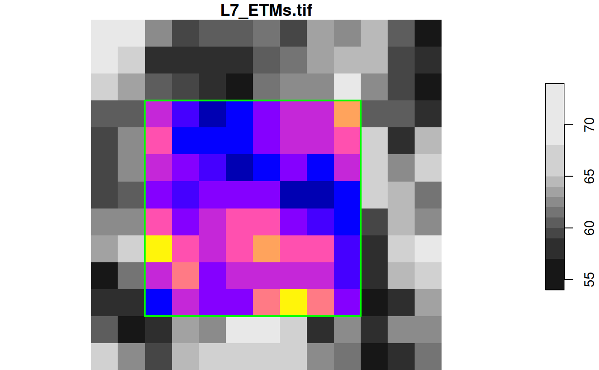

crop a stars object
# S3 method for stars_proxy st_crop( x, y, ..., crop = TRUE, epsilon = sqrt(.Machine$double.eps), collect = TRUE ) # S3 method for stars st_crop( x, y, ..., crop = TRUE, epsilon = sqrt(.Machine$double.eps), as_points = all(st_dimension(y) == 2, na.rm = TRUE) )
Arguments
| x | object of class |
|---|---|
| y | object of class |
| ... | ignored |
| crop | logical; if |
| epsilon | numeric; factor to shrink the bounding box of |
| collect | logical; if |
| as_points | logical; only relevant if |
Details
for raster x, st_crop selects cells that intersect with y.
For intersection, are raster cells interpreted as points or as small polygons?
If y is of class stars, x raster cells are interpreted as points; if y is of class bbox, x cells are interpreted as cells (small polygons). Otherwise, if as_points is not given, cells are interpreted as points if y has a two-dimensional geometry.
Examples
l7 = read_stars(system.file("tif/L7_ETMs.tif", package = "stars")) d = st_dimensions(l7) # area around cells 3:10 (x) and 4:11 (y): offset = c(d[["x"]]$offset, d[["y"]]$offset) res = c(d[["x"]]$delta, d[["y"]]$delta) bb = st_bbox(c(xmin = offset[1] + 2 * res[1], ymin = offset[2] + 11 * res[2], xmax = offset[1] + 10 * res[1], ymax = offset[2] + 3 * res[2]), crs = st_crs(l7)) l7[bb]#> stars object with 3 dimensions and 1 attribute #> attribute(s): #> Min. 1st Qu. Median Mean 3rd Qu. Max. #> L7_ETMs.tif 17 43 55.5 56.36979 65 111 #> dimension(s): #> from to offset delta refsys point values x/y #> x 3 10 288776 28.5 UTM Zone 25, Southern Hem... FALSE NULL [x] #> y 4 11 9120761 -28.5 UTM Zone 25, Southern Hem... FALSE NULL [y] #> band 1 6 NA NA NA NA NULL# slightly smaller bbox: bb = st_bbox(c(xmin = offset[1] + 2.1 * res[1], ymin = offset[2] + 10.9 * res[2], xmax = offset[1] + 9.9 * res[1], ymax = offset[2] + 3.1 * res[2]), crs = st_crs(l7)) l7[bb]#> stars object with 3 dimensions and 1 attribute #> attribute(s): #> Min. 1st Qu. Median Mean 3rd Qu. Max. #> L7_ETMs.tif 17 43 55.5 56.36979 65 111 #> dimension(s): #> from to offset delta refsys point values x/y #> x 3 10 288776 28.5 UTM Zone 25, Southern Hem... FALSE NULL [x] #> y 4 11 9120761 -28.5 UTM Zone 25, Southern Hem... FALSE NULL [y] #> band 1 6 NA NA NA NA NULL# slightly larger bbox: bb = st_bbox(c(xmin = offset[1] + 1.9 * res[1], ymin = offset[2] + 11.1 * res[2], xmax = offset[1] + 10.1 * res[1], ymax = offset[2] + 2.9 * res[2]), crs = st_crs(l7)) l7[bb]#> stars object with 3 dimensions and 1 attribute #> attribute(s): #> Min. 1st Qu. Median Mean 3rd Qu. Max. #> L7_ETMs.tif 17 43 55 56.11167 66 112 #> dimension(s): #> from to offset delta refsys point values x/y #> x 2 11 288776 28.5 UTM Zone 25, Southern Hem... FALSE NULL [x] #> y 3 12 9120761 -28.5 UTM Zone 25, Southern Hem... FALSE NULL [y] #> band 1 6 NA NA NA NA NULL# half a cell size larger bbox: bb = st_bbox(c(xmin = offset[1] + 1.49 * res[1], ymin = offset[2] + 11.51 * res[2], xmax = offset[1] + 10.51 * res[1], ymax = offset[2] + 2.49 * res[2]), crs = st_crs(l7)) l7[bb]#> stars object with 3 dimensions and 1 attribute #> attribute(s): #> Min. 1st Qu. Median Mean 3rd Qu. Max. #> L7_ETMs.tif 17 43 55 56.11167 66 112 #> dimension(s): #> from to offset delta refsys point values x/y #> x 2 11 288776 28.5 UTM Zone 25, Southern Hem... FALSE NULL [x] #> y 3 12 9120761 -28.5 UTM Zone 25, Southern Hem... FALSE NULL [y] #> band 1 6 NA NA NA NA NULL